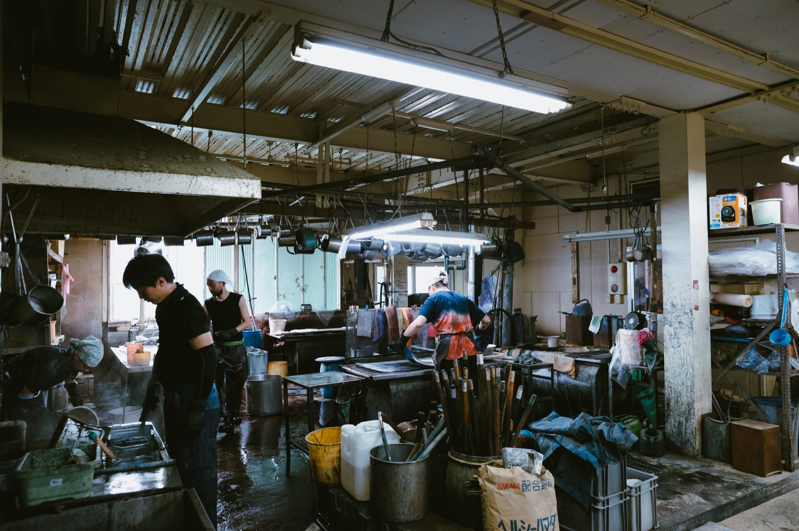
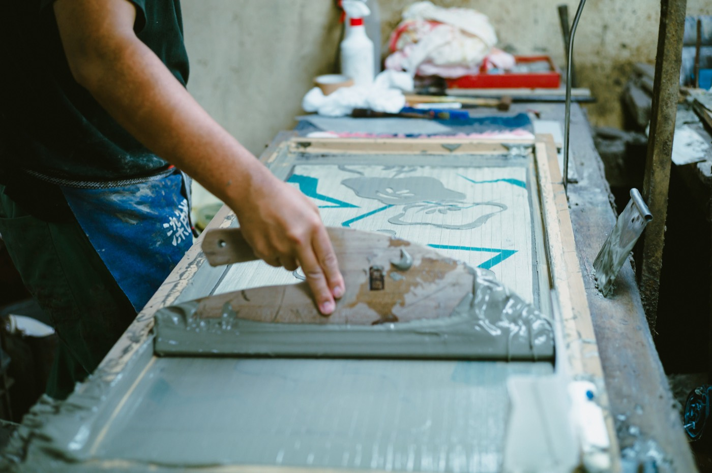

About
丸久について
About
どこか懐かしく、それでいて、
いまの暮らしにも自然と馴染む。
そんなものづくりを、私たちは大切にしています。
Something quietly nostalgic, yet at home
in everyday life today.
That is the kind of making we hold onto.
五代目 斉藤 美紗子

丸久について
Our Story
丸久は明治三十二年、日本橋堀留町に創業した染元です。染元とは、染色製品の企画・制作を行う仕事です。
創業以来、注染を中心にものづくりを続けてきました。注染は江戸時代末期に生まれた、日本独自の型染技法。浴衣や手拭とともに、人々の暮らしに寄り添いながら受け継がれてきました。
現在では、膨大な型紙から図案を復刻したり、そこから新たな意匠を生み出したりしながら、注染という文化そのものを未来へつないでいます。
Marukyu was founded in 1899 in Horidomecho, Nihonbashi, as a someimoto — a maker that plans and produces dyed textiles.
Since then, our work has centered on chusen, a stencil-dyeing technique born in the late Edo period and carried forward through yukata and tenugui.
Today we draw on a vast archive of stencils, reviving old patterns and creating new ones — carrying the culture of chusen itself into the future.
歩み
History
- 1899
- 仮テキスト：創業
- Placeholder: Founded
- 19XX
- 仮テキスト：出来事
- Placeholder: Milestone
- 20XX
- 仮テキスト：出来事
- Placeholder: Milestone
- Now
- 仮テキスト：現在
- Placeholder: Present
会社概要
Company Info
- Name
- 有限会社丸久商店
- Marukyu Shoten Co., Ltd.
- Address
- 〒103-0012 東京都中央区日本橋堀留町一丁目４番１号 1-4-1 Horidomecho, Nihonbashi, Chuo-ku, Tokyo
- info@shinedozome.com
- Tel
- 03-3663-0939
- Fax
- 03-3663-0909
- Hours
- 9:00–17:00（土日祝休）9:00–17:00 (Closed Sat, Sun & Holidays)